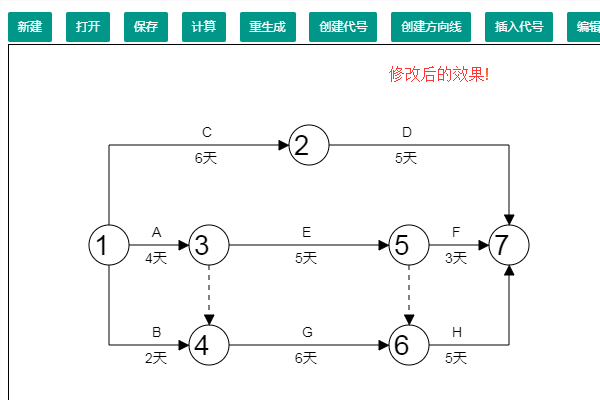

开始使用 - 入门指南
网络计划即网络计划技术（Network Planning Technology），是指用于工程项目的计划与控制的一项管理技术。它是五十年代末发展起来的，依其起源有关键路径法（CPM）与计划评审法（PERT）之分。CPM主要应用于以往在类似工程中已取得一定经验的承包工程，PERT更多地应用于研究与开发项目。
网络计划技术包括以下基本内容：
1、网络图
网络图是指网络计划技术的图解模型，反映整个工程任务的分解和合成。分解，是指对工程任务的划分；合成，是指解决各项工作的协作与配合。分解和合成是解决各项工作之间，按逻辑关系的有机组成。绘制网络图是网络计划技术的基础工作。
2、时间参数
在实现整个工程任务过程中，包括人、事、物的运动状态。这种运动状态都是通过转化为时间函数来反映的。反映人、事、物运动状态的时间参数包括：各项工作的作业时间、开工与完工的时间、工作之间的衔接时间、完成任务的机动时间及工程范围和总工期等。
3、关键路线
通过计算网络图中的时间参数，求出工程工期并找出关键路径。在关键路线上的作业称为关键作业，这些作业完成的快慢直接影响着整个计划的工期。在计划执行过程中关键作业是管理的重点，在时间和费用方面则要严格控制。
4、网络优化
网络优化，是指根据关键路线法，通过利用时差，不断改善网络计划的初始方案，在满足一定的约束条件下，寻求管理目标达到最优化的计划方案。网络优化是网络计划技术的主要内容之一，也是较之其它计划方法优越的主要方面。
网络计划技术既是一种科学的计划方法，又是一种有效的生产管理方法。
网络计划最大特点就在于它能够提供施工管理所需要的多种信息，有利于加强工程管理，它有助于管理人员合理地组织生产，做到心里有数，知道管理的重点应放在何处，怎样缩短工期，在哪里挖掘潜力，如何降低成本．在工程管理中提高应用网络计划技术的水平，必能进一步提高工程管理的水平。
本套软件选用了双代号网络计划与时标网络计划两种类型。
1、双代号网络计划
它就是以双代号网络图表示的计划。双代号网络图以箭线（方向线）表示工作，以节点表示它们的连接点，一项工作可以用其两端节点来表示。箭线的箭尾节点表示该工作的开始，箭线的箭头节点表示该工作的结束。普通网络计划的箭线长度不直接反映该工作所占用的时间长短。
2、时标网络计划
它就是增加了时间坐标的双代号网络计划，其主要特点是计划时间直观。在网络图中，工作箭线的水平投影长度与其持续时间成正比。
双代号网络图中，每一条箭线应表示一项工作。箭线的箭尾节点表示该工作的开始，箭线 的箭头节点表示该工作的结束，在非时标网络图中，箭线的长度不直接反映该工作所占用的 时间。箭线宜画成水平直线，也可画成折线或斜线。箭线的水平投影方向应自左向右 ，表示工作的进行方向。实线箭线的方向不建议垂直向上或向下。虚线箭线表示一项虚工作，其表示形式建议垂直向上或向下，也可水平 （不建议）。
代号的数值不可重复，建议从1开始，顺序增加。
双代号网络图中，应只有一个起点节点，并且只有一个终点节点，其他节点均应是中间节点。所有节点都应该被箭线连接。
箭线的方向，只能由小代号指向大代号。
在本软件中，代号的坐标必须为50的正倍数，且不宜小于100。

1、认识Canvas画布。
如下图所示，Canvas 元素默认被网格所覆盖。通常来说网格中的一个单元相当于 Canvas 元素中的一像素。栅格的起点为左上角，坐标为 (0,0) 。所有元素的位置都相对于原点来定位。所以图中蓝色方形左上角的坐标为距离左边（X 轴）x 像素，距离上边（Y 轴）y 像素，坐标为 (x,y)。
2、创建代号。
3、至少创建两个代号。
4、创建方向线。
5、绘制完整的、合规的网络计划。
6、计算
7、查看计算结果
8、效果优化

9、每次编辑或删除元素后，都必须重新计算，才能显示正确的网络图!

1、新建按钮
清空画布，以便绘制新的网络计划。虽然，直接刷新页面也是同样的效果。。
2、打开按钮
可以打开已保存的网络计划。
3、保存按钮
将网络计划保存到服务器。
4、重生成按钮
一般用于网络计划显示不全时，可以利用重生成重新定义画布大小，以便展示完整的网络计划。
5、整体平移按钮
将网络计划图整体像X方向或Y方向平移n个像素。
1、二段转折线
2、插入代号
Carl·Bryant - 用心与你沟通